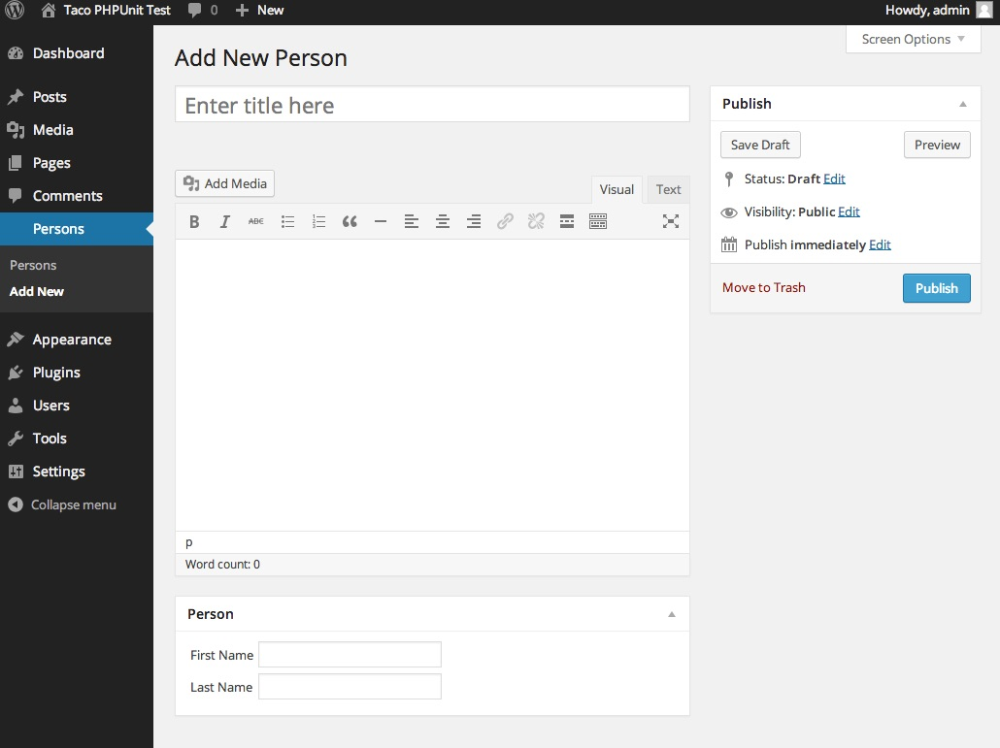

Taco is a library for quickly creating WordPress custom post types and terms using code. Taco treats custom post types like MVC frameworks treat models.
Are you comfortable writing basic PHP — functions, accessing arrays, manipulating strings, etc.? Then you should be fine.
Composer is the preferred method for installing Taco. Visit the Taco homepage for instructions on installing Taco via Composer.
For your own sanity and security, you’re hopefully running PHP >= 5.4 and WordPress >= 4.0. But if not, Taco works as far back as:
Let’s make a simple custom post type with Taco.
Each custom post type you create with Taco should be its own plugin. Using the taco_ prefix isn’t necessary, but is recommended.
Below is the admin interface that Taco will automatically create when we define our Person post type. We have Title, Content, First Name, and Last Name fields.

wordpress/wp-content/plugins/taco_person/taco_person.php
<?php
/**
* Plugin Name: taco_person
*/
class Person extends \Taco\Post {
public function getFields() {
return array(
'first_name'=>array('type'=>'text'),
'last_name' =>array('type'=>'text'),
);
}
}
First, let’s look at the filename and path:
wordpress/wp-content/plugins/taco_person/taco_person.php
WordPress looks for plugins in the wp-content/plugins directory. From there, WordPress does a loop over all the subdirectories and attempts to find a corresponding filename. Hence, your plugin name (taco_person) should always have a corresponding file (taco_person.php).
WordPress parses the file looking for a comment at the top with at least a "Plugin Name:" defined. For convenience, it’s easiest to make your Plugin Name the same as the directory name.
/** * Plugin Name: taco_person */
The \Taco\Post class is autoloaded by Composer, and \Taco\Post does most of the heavy lifting for custom post types. It registers our post type, adds meta boxes to the admin UI, and provides a nice OOP interface for programmatically interacting with the post type.
class Person extends \Taco\Post {
...
}
The getFields method is where we define which custom fields we want our post type to have. In this case, we want two fields: first and last name. Your getFields method should just return an array. For this simple case, we will only define text fields, but Taco supports many more HTML5 input types.
public function getFields() {
return array(
'first_name'=>array('type'=>'text'),
'last_name' =>array('type'=>'text'),
);
}
After writing your plugin code, you will need to activate your plugin using the WordPress admin interface.
Once your plugin is activated, you will see the sidebar item that Taco adds. Click into Person and start adding posts!
Good taco_person/taco_person.php
Bad taco-person/taco-person.php
WordPress conventions are to use dashes instead of underscores when naming plugins, but Taco recommends using underscores. Using dashes can cause WordPress to load plugins in an unexpected order, even resulting in fatal errors or the dreaded white screen of death. Generally using dashes works out fine because plugins don’t usually rely on each other. But if you want one Taco plugin to extend another, you are safer using underscores.
Post type values identified by the post_type column in the wp_posts table. The post_type values are automatically generated by Taco and use the following patterns:
Examples of this in action:
Person is post_type of personPageBlock is post_type of page-blockYou are best off using underscores for your field keys in getFields method because that empowers you to more easily use Taco’s OOP syntax in your templates:
wordpress/wp-content/plugins/taco_person/taco_person.php
public function getFields() {
return array(
'first_name'=>array('type'=>'text'),
);
}
wordpress/wp-content/themes/your-theme/single-person.php
<?php $person = Person::find($post->ID); echo $person->first_name; // $person->first-name; <!-- this would throw a PHP error
Add fields to your Taco custom post type by defining your getFields method. You can use normal HTML5 attributes and types:
public function getFields() {
return array(
'first_name' =>array('type'=>'text'),
'quote' =>array('type'=>'textarea'),
'email' =>array('type'=>'email'),
'favorite_color' =>array('type'=>'color'),
'is_professional' =>array('type'=>'checkbox'),
'age' =>array('type'=>'number'),
'favorite_sauce' =>array(
'type'=>'select',
'options'=>array(
'mild' =>'Mild',
'medium'=>'Medium',
'spicy' =>'Spicy'
),
),
'photo_path' =>array('type'=>'image'),
'resume_pdf_path' =>array('type'=>'file'),
);
}
Add fields to your Taco custom post type by defining your getFields method. You can use normal HTML5 attributes and types:
WordPress offers lots of core fields that you can attach to your custom post type:
$taco_post->post_title$taco_post->post_contentTaco sees this as overkill for most custom post types. So by default, Taco will only attach the title and editor fields to a Taco custom post type for use in the admin add/edit forms. To override this default and set your own core fields, add a getSupports method to your class:
public function getSupports() {
// will only attach the title field, not the editor
return array('title');
}
To make a field required, just add a required attribute to your field definition in getFields:
public function getFields() {
return array(
'first_name'=>array('type'=>'text', 'required'=>true),
);
}
By default, labels are automatically generated using a humanized version of the field name. To override a field’s label, use the label attribute:
public function getFields() {
return array(
'first_name'=>array(
'type'=>'text',
'label'=>'Your first name'
),
);
}
To add a field description (will be rendered as italicized help text under the input field), set the description attribute when configuring your field in getFields:
public function getFields() {
return array(
'first_name'=>array(
'type'=>'text',
'description'=>'The name you like to be called by friends',
),
);
}
Unless overridden, validators will automatically run on each field according to these rules:
Custom validators can also be applied by overriding the isValid method:
public function getFields() {
return array(
'date_of_birth'=>array('type'=>'date'),
);
}
public function isValid($vals) {
// Let \Taco\Post::isValid do most of the work
$parent_is_valid = parent::isValid($vals);
if(!$parent_is_valid) return false;
// Verify person is 18 yrs or older based on date_of_birth field
$dob_value = $vals['date_of_birth'];
$min_age_seconds = 18*60*60*24*365;
if(strtotime('now') - strtotime($dob_value) < $min_age_seconds) {
$this->_messages['date_of_birth'] = 'Too young';
return false;
}
return true;
}
Add the wysiwyg class to your field to get a WYSIWYG editor:
Note You must also have editor in your getSupports method. Unlike some plugins, Taco enables you to have multiple WYSIWYG fields on the same page.
public function getFields() {
return array(
'quote'=>array('type'=>'textarea', 'class'=>'wysiwyg')
);
}
public function getSupports() {
return array('title', 'editor');
}
Taco uses core WordPress post and postmeta table storage. So you can always access custom post type data by calling WordPress functions like get_post, get_posts, etc.
But Taco also provides a clean object oriented interface to post data, both for retrieving and storing data.
Getting your custom post data out of the database is straightforward:
wordpress/wp-content/themes/your-theme/single-person.php
<?php $person = Person::find($post->ID); // WordPress has populated $post echo $person->first_name;
| Method | Description | Usage |
|---|---|---|
find |
Find a single post by ID |
$person = Person::find(5); |
load |
Load a single post by ID |
$person = new Person; $person->load(5); |
getBy |
Gets posts by one custom field key and value |
$persons = Person::getBy('is_featured', 1);
|
getOneBy |
Get the first post by one custom field key and value |
$person = Person::getOneBy('is_featured', 1);
|
getByTerm |
Gets posts by one matching term |
// Get persons with term-slug checked
$persons = Person::getByTerm('my-taxonomy', 'term-slug');
// Get blog posts with category id 12 checked
$posts = Post::getByTerm('category', 12, 'id');
|
getOneByTerm |
Get the first post by one matching term |
// Get first person with term-slug checked
$person = Person::getOneByTerm('my-taxonomy', 'term-slug');
// Get first blog post with category id 12 checked
$post = Post::getOneByTerm('category', 12, 'id');
|
getAll |
Get all the posts |
$persons = Person::getAll(); |
getWhere |
Gets posts by get_posts criteria.Note that if you're calling this with only one meta_key and meta_value, you may want to use getBy instead. |
$persons = Person::getWhere(array(
'meta_query'=>array(
array(
'key' =>'is_featured',
'value'=>true,
),
),
'orderby' =>'post_date',
'order' =>'DESC'
));
|
getOneWhere |
Same as getWhere but only returns one record |
$person = Person::getOneWhere(array(
'meta_query'=>array(
array(
'key' =>'is_featured',
'value'=>true,
)
),
'orderby' =>'post_date',
'order' =>'DESC'
));
|
getPairs |
Gets pairs (id=>title) by get_posts criteria. |
$pairs = Person::getPairs(); |
getPairsBy |
Gets pairs by key/value criteria. |
$pairs = Person::getPairsBy('is_featured', 1);
|
Using the WordPress admin UI, custom post types are automatically saved just like any normal WordPress post. There's no work to do.
But saving your post programmatically is also easy, which is great for things like data import scripts. First, set your data, then save. You can set your data multiple ways:
$testimonial = new Testimonial; $testimonial->person = 'Abraham Lincoln'; $testimonial->quote = 'The thing about quotes on the internet is that you cannot confirm their validity.'; $testimonial->save();
$testimonial = new Testimonial; $testimonial->assign(array( 'person'=> 'Abraham Lincoln', 'quote' => 'The thing about quotes on the internet is that you cannot confirm their validity.' )); $testimonial->save();
$testimonial = new Testimonial(array( 'person'=> 'Abraham Lincoln', 'quote' => 'The thing about quotes on the internet is that you cannot confirm their validity.' )); $testimonial->save();
Do you need custom save functionality? For instance, you may want to perform another action upon save:
Note You must include the $exclude_post=false parameter when overriding the save method to avoid a WordPress infinite recursion problem.
// Send an email on save
public function save($exclude_post=false) {
$subject = sprintf('New post: %s', $this->get('post_title'));
$body = $this->get('post_content');
mail('test@example.com', $subject, $body);
return parent::save($exclude_post);
}
Taco employs a factory pattern to create Taco post objects from WordPress post objects and IDs.
<?php $person = \Taco\Post\Factory::create($post); echo $person->first_name;
Often you have an array of WordPress post objects that you want converted into Taco posts:
<?php $persons = \Taco\Post\Factory::createMultiple($posts); echo current($persons)->first_name;
Taco contains several convenience methods for common templating requirements:
| Method | Description | Usage |
|---|---|---|
getPermalink |
Returns the post permalink | echo $taco_post->getPermalink(); |
getTheTitle |
Returns the post_title run with the_title filter applied |
echo $taco_post->getTheTitle(); |
getTheContent |
Returns the post_content run with the_content filter applied |
echo $taco_post->getTheContent(); |
getTheExcerpt |
Returns the post_excerpt run with the_content filter applied. Shortens post_content if post_excerpt not defined. |
echo $taco_post->getTheExcerpt(); |
getThePostThumbnail |
Returns the post_thumbnail image tag | echo $taco_post->getThePostThumbnail('full'); |
getPostAttachment |
Returns the post_thumbnail image array containing URL and size data |
$image_array = $taco_post->getPostAttachment('full'); $image_width = $image_array['width'];
|
getPostAttachmentURL |
Returns the post_thumbnail image URL | echo $taco_post->getPostAttachmentURL('full'); |
getThe |
Returns any value run through the_content filter | echo $taco_post->getThe('custom_field_name'); |
getAnchorTag |
Returns the anchor tag | echo $taco_post->getAnchorTag(); |
You can extend built-in types like Post and Page using the same code as Custom Post Types. Let’s say your blog posts need to store a YouTube video ID:
wordpress/wp-content/plugins/taco_post/taco_post.php
<?php
/*
Plugin Name: taco_post
*/
class Post extends \Taco\Post {
public function getFields() {
return array(
'youtube_video_id' => array('type'=>'text'),
);
}
}
You can remove your post type from search results by overriding getExcludeFromSearch method:
public function getExcludeFromSearch() {
return true;
}
Want results from getWhere, getAll to be sorted by a custom field? You got it dude. Just override getDefaultOrderBy.
// Simple example
public function getFields() {
return array(
'first_name'=>array('type'=>'text'),
);
}
public function getDefaultOrderBy() {
return 'first_name';
}
If you have a numeric field, you probably want MySQL to sort your results numerically, not alphabetically (which is the default). Here's how:
// Numeric sorting by weight
// Notice type=number
public function getFields() {
return array(
'weight'=>array(
'type'=>'number',
'description'=>'Lower weights bubble to the top'
),
);
}
public function getDefaultOrderBy() {
return 'weight';
}
You can also change the default order:
public function getDefaultOrder() {
return 'DESC';
}
This allows you to rewrite the URL for the archive pages of a custom post type. For example. If the custom post typ’s slug is 'product', you could change it to 'products'.
public function getRewrite() {
return array('slug'=>'products');
}
A full list of args that can be passed into the array can be found at:
http://codex.wordpress.org/Function_Reference/register_post_type#Arguments
Singular and plural labels for your content type (e.g. Testimonial, Testimonials) are automatically assigned based on the class name (e.g. Testimonial). These values appear in the admin sidebar and toolbar. However, you can override these values using the getSingular and getPlural methods.
public function getSingular() {
return 'My Testimonial';
}
public function getPlural() {
return 'My Testimonials';
}
By default, if you place a file named icon.png, icon.gif, or icon.jpg in your plugin directory, it will be automatically used. However, you can also override the getMenuIcon method to change the post type icon in the left sidebar.
public function getMenuIcon() {
return '/path/to/icon.png';
}
By default, any fields and taxonomies you add via getFields and getTaxonomies will automatically be part of the index page for your post type. Image file types will also render as thumbnails. You can optionally override the getAdminColumns method to change the columns visible in the admin index page.
public function getAdminColumns() {
return array('first_name');
}
You can customize the meta box in two ways:
By default, the meta box title will be the result of getSingular, but you can customize the title by overriding getMetaBoxTitle:
public function getMetaBoxTitle() {
return 'My Awesome Title';
}
By default, the meta box body will only contain a form. You can customize the meta box output with prepended out appended HTML by overriding the renderMetaBox method:
public function renderMetaBox($post, $post_config) {
$html = '<p>Prepended content</p>';
// Form HTML
// Pass true as the 3rd param for the parent method to
// return HTML instead of echoing it.
$html .= parent::renderMetaBox($post, $post_config, true);
$html .= '<p>Appended content</p>';
echo $html;
}
You can customize how a field renders by overriding the getRenderMetaBoxField method:
public function getFields() {
return array(
'first_name'=>array('type'=>'text')
);
}
public function getRenderMetaBoxField($name, $field) {
if($name === 'first_name') {
return 'insert your html here for the first name field';
}
return parent::getRenderMetaBoxField($name, $field);
}
By default, any fields identified in getFields will be rendered inside of a single meta box. If you need multiple meta boxes, override the getMetaBoxes function. There are 3 ways to do this:
The code below will produce two metaboxes: Home and Footer
// field definitions
public function getFields() {
return array(
'home_subtitle' => array('type'=>'text'),
'home_copy' => array('type'=>'text'),
'footer_copyright' => array('type'=>'text'),
'footer_about_copy' => array('type'=>'texarea'),
);
}
// Automatic Prefix Grouping
public function getMetaBoxes() {
return self::METABOX_GROUPING_PREFIX;
}
The code below will also produce two metaboxes: Home and Footer. But this time we've added another field to Footer. Note the * wildcard syntax.
// field definitions
public function getFields() {
return array(
'home_subtitle' => array('type'=>'text'),
'home_copy' => array('type'=>'text'),
'footer_copyright' => array('type'=>'text'),
'footer_about_copy' => array('type'=>'texarea'),
'site_owner' => array('type', 'text'),
);
}
// Semiautomatic Prefix Grouping
public function getMetaBoxes() {
return array(
'home' => 'home_*', // Equivalent to array('home_*')
'footer' => array('footer_*', 'site_owner'),
);
}
You can always be verbose about your meta box groupings:
// field definitions
public function getFields() {
return array(
'first_name' => array('type'=>'text'),
'last_name' => array('type'=>'text'),
'email' => array('type'=>'email'),
'phone' => array('type'=>'text'),
);
}
// simple example of multiple metaboxes
public function getMetaBoxes() {
return array(
'name' => array('first_name', 'last_name'),
'contact' => array('email', 'phone')
);
}
If you need more granular control over your generated meta box, for instance you need to customize the meta box title, override getMetaBoxes in this format:
// advanced example of multiple metaboxes
public function getMetaBoxes() {
return array(
'name' => array(
'title' => 'My Name Meta Box',
'fields'=> array('first_name', 'last_name')
),
'contact' => array(
'title' => 'My Contact Meta Box',
'fields'=> array('email', 'phone')
)
);
}
Many WordPress developers use Advanced Custom Fields (ACF) to create custom post types. Taco and ACF do very similar things, but take different approaches:
| Taco | Advanced Custom Fields |
|---|---|
| Installation Composer autoloader or WordPress plugin |
Installation WordPress plugin |
| Register custom post types with Done for you when extending \Taco\Post |
Register custom post types with Call register_post_type in functions.php |
| Add custom fields with PHP code |
Add custom fields with WYSIWYG |
| PHP Style Object Oriented |
PHP Style Procedural |
Simple Template Usage<?php $event = Event::find($post->ID); ?> <p> <?php echo $event->city; ?> </p> |
Simple Template Usage
<?php while(have_posts()): ?>
<?php the_post(); ?>
<p>
<?php the_field('city'); ?>
</p>
<?php endwhile; ?>
|
Simple Querying
<?php
$posts = Event::getBy('city', 'NYC');
|
Simple Querying<?php $posts = get_posts(array( 'numberposts' => -1, 'post_type' => 'event', 'meta_key' => 'city', 'meta_value' => 'NYC' )); |
|
Saving Posts Done via WYSIWYG or code: <?php $event = new Event; $event->city = 'Boulder'; $event->save(); |
Saving Posts Done via WYSIWYG |
Advanced Custom Fields takes a Drupal-esque approach to custom field — you create and manage them via WYSIWYG within the CMS.
Taco prefers to manage data structures in code written by a developer because that makes debugging easier, plus changes can run through version control and normal deployment procedures. But writing that code should be simple and intuitive, so Taco does most of the heavy lifting.
Taco is open source software released under the MIT License. You can View Taco on GitHub to view the license information and to contribute to the project.